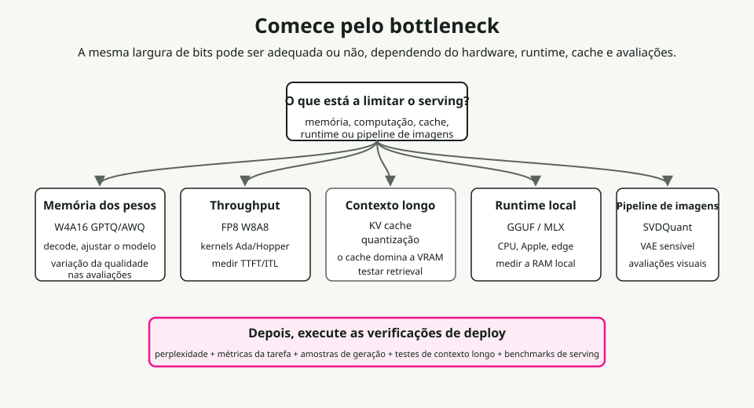
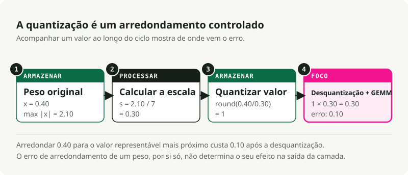
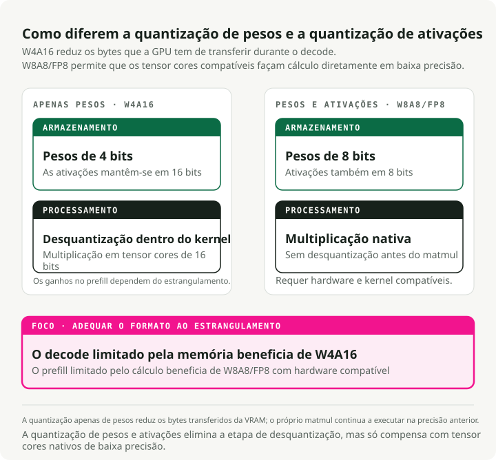
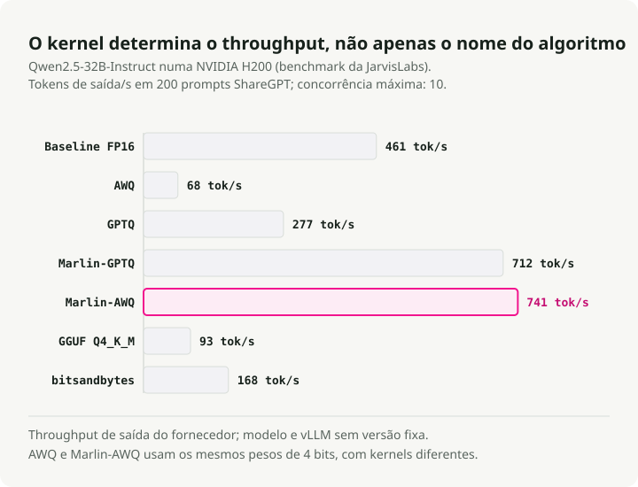
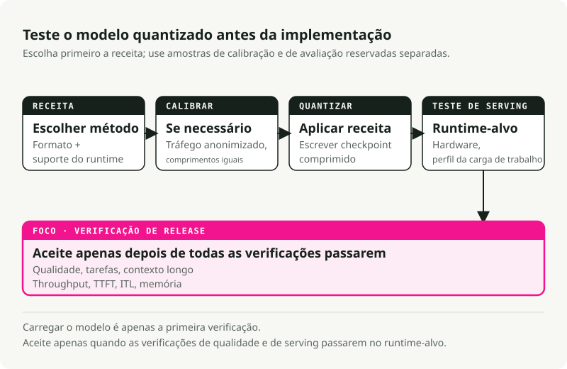

Tradução automática
Este artigo foi traduzido automaticamente a partir da versão original em inglês.
Quantização de Modelos em 2026: Das Fundamentações à Implementação em Produção
A quantização raramente é algo que se faz simplesmente ao pressionar um botão para utilizar menos bits e economizar memória; até mesmo a definição básica depende do fato de se estar a comprimir pesos, ativações ou ambosEm sistemas de produção, a quantização exige um equilíbrio entre memória de pesos, cálculo de ativações, tamanho do cache KV, kernels em tempo de execução, suporte de hardware, dados de calibração e qualidade. Um modelo de 4 bits pode caber na VRAM, mas funcionará lentamente se o kernel não estiver bem otimizado, uma vez que o Benchmark JarvisLabs vLLM mostra quando o algoritmo e o kernel são diferentes. O FP8 é excelente nas GPUs NVIDIA Hopper quando o tempo de execução e o hardware o suportam, mas é inútil em hardware sem caminhos nativos para núcleos de tensores FP8; o TensorRT-LLM’s matriz de suporte de hardware torna essa dependência explícita. Quantização da cache KV pode ser mais importante do que a quantização de peso ao lidar com contextos longos e alta concorrência; ela altera o formato numérico utilizado para armazenar e ler os tensores de chave/valor em cache.
TL;DR: Escolha o gargalo de desempenho antes de definir a largura de bits. Utilize AWQ ou GPTQ quando os pesos não cabem na VRAM. Utilize FP8 W8A8 quando se processam cargas de trabalho de alto throughput em GPUs com suporte a FP8. Teste Quantização da cache KV quando um contexto extenso ou alta concorrência consomem memória. Utilize Arquivos GGUF com codificações de tensor do llama.cpp como Q4_K_M, Q5_K_M ou Q8_0 para CPU local, Apple Silicon e inferência em desktop. Mantenha NF4Utilizado maioritariamente para o ajuste fino no estilo QLoRA, e não como formato padrão de fornecimento em produção.**

1. Comece pelo gargalo
A pergunta relevante não é “Quantos bits posso remover?”, mas sim “O que está a limitar este workload neste momento?”
Gargalos comuns e os seus pontos de origem:
| Se este for o problema | Comece por aqui. | Ferramentas típicas | Verificar antes de implementar |
|---|---|---|---|
| Os pesos do modelo não cabem na VRAM. | Quantização apenas de peso W4A16 | AWQ ou GPTQ com llm-compressor ou GPTQModel |
Perplexidade, programação, raciocínio, seguimento de instruções |
| O serviço de alto throughput é limitado por recursos de computação | FP8 ou INT8 W8A8 | FP8 PTQ SmoothQuant, TensorRT-LLM, vLLM | Largura de banda, TTFT, precisão da tarefa |
| Contexto extenso ou alta concorrência esgotam a GPU | Quantização da cache KV | vLLM, TensorRT-LLM, ou Transformers QuantizedCache | Recuperação de contexto longo, latência, segurança e qualidade |
| Inferência local no CPU, Apple Silicon ou em desktop | Ficheiros GGUF com codificações de tensores locais | llama.cpp, Ollama, LM Studio |
Latência do prompt, utilização de RAM, codificação do tensor selecionado e qualidade subjetiva da saída |
| O ajuste fino do adaptador deve caber numa única GPU | NF4 / QLoRA | bitsandbytes, peft |
Perda de ajuste fino e qualidade do modelo fundido |
| O pipeline de geração de imagens é demasiado grande ou lento. | INT4 ou FP8 específicos para difusão | SVDQuant, Nunchaku, torchao, NVIDIA ModelOpt |
Artefactos visuais, alinhamento do prompt, latência, VRAM |
Utilize esta tabela como mapa. As secções seguintes explicam por que esses pontos de partida diferem.
Alguns termos antes da matemática
- W{x}A{y} indica a precisão para as operações matemáticas de pesos e ativações suportadas, geralmente os caminhos GEMM nos motores de execução. W4A16 armazena os pesos em formato de 4 bits e mantém as ativações com precisão de 16 bits. W8A8 utiliza pesos e ativações de 8 bits nos caminhos de computação suportados, mas não define automaticamente o tipo de dados de armazenamento persistente para cada tensor em tempo de execução.**
- FP8, INT8, INT4, NF4 são formatos numéricos. Eles determinam quais valores podem ser representados.**
- **GPTQ, AWQ, SmoothQuant, QuaRot
- GGUF é um formato de ficheiro, e não um algoritmo de quantização. Ele armazena tensores juntamente com metadados para GGML e
llama.cpp-runtimes de estilo específico. Um ficheiro GGUF pode conter tipos de tensor não quantificados, comoF16,BF16, ouF32, ou codificações de tensores quantizados e predefinições comoQ4_K_M,Q5_K_M,Q8_0,IQ*,TQ*, ouMXFP4. Não leia.GGUFcomo um modelo de processamento em estilo CUDA para FP8 W8A8. - Cache KV é o cache de atenção utilizado durante a geração. Ele armazena chaves e valores anteriores para que o modelo não recalcule toda a conversa a cada token.**
- Quantização da cache KV armazena os tensores de ativação de chave/valor em cache num formato de menor precisão, como FP8, INT8, INT4 ou INT2, consoante o suporte em tempo de execução. Isto difere de armazenamento em cache de prefixos, PagedAttention, ou o seu descarregamento, que determinam se as entradas de cache são reutilizadas, como são alocadas ou onde residem.
- GEMM refere-se à multiplicação geral de matrizes. A maior parte do tempo de inferência dos transformadores é gasta a realizar operações de multiplicação matricial.
2. A quantização é um arredondamento controlado
A quantização mapeia valores de alta precisão para um conjunto mais reduzido de valores representáveis, sendo esta a definição fundamental utilizada por ambos Hugging Face Optimum e TensorRT-LLM. Economiza memória e largura de banda. Introduz também um erro de arredondamento.
Quantificar de BF16 para INT4 reduz os valores disponíveis a apenas 16 intervalos discretos, e é por isso que trabalhos sobre arquiteturas de baixo número de bits, como GPTQ, AWQ, e SVDQuant Gastar tanto esforço em valores atípicos e no erro de reconstrução. Se estas categorias capturarem com precisão a distribuição de pesos do modelo, poupa-se memória sem perder capacidades. Se a grade de quantização destruir um canal atípico importante, o modelo perde a capacidade de raciocínio, de seguir instruções ou de manter fidelidade visual.
Mapeamento simétrico e assimétrico
Seguindo o mapeamento afim utilizado em sistemas comuns guias de quantização, a quantização mapeia um valor flutuante contínuo \(x \in [\beta, \alpha]\) para uma grade discreta.
- \(x\) é o valor original de alta precisão.
- \(x_q\) é o valor quantizado.
- \(s\) é a escala, ou tamanho do passo.
- \(z\) é o ponto zero, a localização inteira que representa
0.0. - \([q_{\min}, q_{\max}]\) é o intervalo inteiro alvo. Valores assinados de 4 bits costumam utilizar \([-7, 7]\).
Quantização simétrica centra a grade em torno de zero e define \(z = 0\):
Isto é compatível com hardware, uma vez que os cálculos em tempo de execução não precisam de subtrair um deslocamento de ponto zero; a pilha de quantização do PyTorch expõe estas opções de escala afim e ponto zero como parâmetros primitivos de quantização torchaoQuantização assimétrica desloca a grelha para cobrir intervalos assimétricos:
Essa grelha deslocada consegue preservar melhor as ativações exclusivamente positivas, mas o deslocamento acarreta um esforço adicional, a menos que o kernel trate esse aspeto de forma eficaz.

A granularidade da escala é importante
O fator de escala pode abranger um tensor de pesos inteiro, um canal ou um pequeno grupo de valores; Documentação da cache KV em FP8 da vLLM Utilize a mesma distinção entre as estratégias de escala por tensor e por cabeça de atenção. Grupos mais pequenos costumam preservar a qualidade de forma mais eficaz, mas exigem o armazenamento de mais metadados relacionados com a escala.
- Escala por tensor: Utiliza um único fator de escala para toda a matriz de pesos. É computacionalmente simples, mas um único peso atípico em qualquer posição da matriz irá distorcer a grade inteira, destruindo a precisão de todos os outros pesos nessa camada.
- Escala por canal: Atribui um fator de escala separado a cada linha (canal de saída) da matriz de pesos. Como diferentes neurónios de saída possuem intervalos numéricos distintos, atribuir um fator de escala próprio a cada canal impede que os intervalos mais estreitos percam precisão para dar espaço aos canais mais amplos. Esta é a configuração padrão por defeito em muitos casos. Quantização de peso de 8 bits caminhos.
- Escala por grupo (por blocos): Divide cada linha da matriz de pesos em blocos sequenciais menores — normalmente com 64 ou 128 elementos — e atribui um fator de escala a cada bloco. Este é o método ideal para formatos de pesos de 4 bits, pois isola os pesos extremos e atípicos num pequeno grupo local (por exemplo, conforme documentado no AutoGPTQ).
group_size=128no seu Exemplos de GPTQ), mantendo a precisão em todos os outros pesos da camada.
Os pesos são estáticos, pelo que as suas escalas podem ser calculadas offline antes mesmo de carregar o modelo. As ativações mudam a cada token, o que significa que os seus intervalos são imprevisíveis. Isso gera duas opções de processamento para lidar com as ativações:
- Escala de ativação estática calcula as escalas de ativação offline utilizando um conjunto de dados de calibração e, em seguida, codifica essas escalas diretamente no modelo. Em tempo de execução, o modelo utiliza essas escalas fixas sem realizar cálculos adicionais. É rápido, mas só funciona se os seus dados de calibração corresponderem perfeitamente aos comprimentos e distribuições de entrada observados em produção. Se um prompt de produção gerar um pico de ativação fora da faixa calibrada, o modelo o truncará, comprometendo assim a saída.**
- Escala dinâmica de ativação calcula a escala das ativações em tempo real durante a passagem forward, analisando os valores reais dos tokens nesse exato momento. Ele lida perfeitamente com variações nos prompts e deteta picos inesperados de ativação, mas calcular o mínimo e o máximo do tensor de ativação em cada camada gera um acréscimo de custo em termos de desempenho e requer kernels especializados e otimizados para funcionar de forma rápida.
O Cache KV encontra-se entre esses casos. As chaves e os valores são tensores de ativação em tempo de execução: cada camada calcula-os a partir dos estados ocultos durante a passagem forward. No entanto, uma vez gerados, deixam de ser intermediários temporários de matmul e tornam-se um estado de serviço persistente que a mecanismo de atenção utiliza para os tokens subsequentes. Um motor de serviço pode armazenar esse estado com precisão inferior e manter metadados de escala juntamente com ele, como demonstrado por Cache KV quantizado do vLLM, Cache KV em FP8 do TensorRT-LLM, e Transformers QuantizedCache. Essa escolha de armazenamento em cache é independente da precisão de ativação utilizada nos kernels lineares, e é por isso que “quantização de cache KV” é um termo válido, mas não deve ser usado como sinónimo de todas as otimizações de cache KV.
PTQ e QAT ocorrem em fases diferentes
Quantização pós-treino, ou PTQ, compacta um modelo treinado posteriormente. Treino com consciência de quantização, ou **QAT
| Método | Quando os intervalos são aprendidos | Use-o quando | Custo a pagar |
|---|---|---|---|
| PTQ apenas com ponderação | Offline, para pesos estáticos | O modelo não se ajusta ou a decodificação é limitada pela largura de banda. | As ativações continuam a ser executadas em 16 bits |
| PTQ Estático | Offline, a partir dos comandos de calibração | Quer um serviço W8A8 rápido? | Os dados de calibração devem corresponder à produção |
| PTQ Dinâmico | Tempo de execução, por lote ou caminho de ativação | As distribuições de entrada variam consideravelmente | Trabalho adicional em tempo de execução e suporte de hardware mais limitado |
| QAT | Durante o treino | PTQ compromete a qualidade num modelo sensível | Infraestrutura completa de treino e muito mais recursos de computação |
Os dados de calibração devem assemelhar-se ao tráfego que será processado; o caminho de calibração do KV-cache do vLLM, por exemplo, utiliza um conjunto de dados cuidadosamente selecionado llm-compressor. Se os prompts de produção forem sequências RAG longas, parágrafos curtos da Wikipédia fornecerão valores de referência atraentes, mas resultarão numa implementação que não funciona corretamente. O modelo irá ajustar as suas escalas de ativação de acordo com textos curtos e, posteriormente, enfrentará padrões de ativação diferentes quando chegarem prompts reais com contexto extenso — um risco também observável em avaliações de quantização de contexto longo.
3. Os formatos numéricos determinam os requisitos de hardware
O formato numérico define quais valores o modelo pode representar na memória, mas armazenar um formato não implica que a sua GPU consiga processá-lo de forma eficiente. Uma execução rápida exige kernels em tempo de execução e suporte de hardware para essa largura de bits e formato específicos; a documentação do TensorRT-LLM aborda ambos os aspetos. lista de receitas e matriz de suporte de hardware.
| Formato | Armazenamento por valor | Bom valor padrão para | Ponto de verificação principal |
|---|---|---|---|
| BF16 / FP16 | 2 bytes | Serviço compatível com inferência de linha de base e treino | Uso elevado de VRAM e tráfego de largura de banda de memória elevada |
| FP8 | 1 byte | Serviço de alto rendimento W8A8 em execução em Ada, Hopper e Blackwell | É necessário suporte em tempo de execução e núcleos de tensor FP8 nativos |
| INT8 | 1 byte | W8A8 em funcionamento em hardware mais antigo ou que não seja da NVIDIA | Valores atípicos de ativação e sensibilidade da calibração estática |
| INT4 | 0,5 bytes | W4A16 quando a memória de peso é o principal limite | Perda de qualidade em modelos mais pequenos ou com maior carga de raciocínio |
| FP4 / NVFP4 | ~0,5 bytes | Experimentos da era Blackwell e caminhos iniciais de servir | Requisitos de compilador e tempo de execução específicos do hardware |
| Codificações / predefinições GGUF do llama.cpp | Variável | Inferência local na CPU, Apple Silicon, em desktops e em dispositivos de edge | GGUF é o contêiner; a codificação de tensores corresponde à escolha de quantização. |
| NF4 | 0,5 bytes | Treino do adaptador QLoRA | Geralmente, o formato de exportação incorreto para envio em produção |
BF16 e FP16 utilizam ambos 16 bits, mas distribuem a precisão de forma diferente, o que resulta em modos de falha distintos. O BF16 mantém o intervalo de expoente de 8 bits do FP32, sendo assim mais difícil de sofrer overflow. O FP16 possui mais bits na mantissa, mas um intervalo de expoente mais estreito, pelo que picos de ativação exigem maior atenção; a avaliação realizada por Kurtic et al. utiliza explicitamente BF16 como linha de base ao comparar os formatos de fornecimento FP8, INT8 e INT4.
FP8 possui duas variantes comuns. O E4M3 oferece maior precisão e é geralmente utilizado para pesos e ativações em direção à saída. O E5M2 proporciona maior faixa dinâmica, sendo mais útil para gradientes ou caminhos de ativação voláteis; o vLLM disponibiliza ambos. Tipos de cache KV FP8 E4M3 e E5M2. No estudo da ACL 2025 de Kurtic et al., intitulado “Give Me BF16 or Give Me Death”, FP8 W8A8 foi efetivamente sem perdas na família Llama-3.1, com mais de 500.000 avaliações realizadas. Isso não significa que toda implementação em FP8 seja automática. Significa sim que este formato se revela eficaz quando a pilha de servir é utilizada corretamente.
O Blackwell introduz formatos de microescala como o MXFP8 e o NVFP4. Em vez de aplicar uma única escala a todo o tensor ou linha, a microescala utiliza blocos muito pequenos. Explicação sobre o NVFP4 da NVIDIA descreve valores de ponto flutuante de 4 bits em blocos de 16, com fatores de escala FP8 e um fator de escala de nível superior FP32. Esta abordagem visa oferecer um footprint semelhante ao de INT4 com comportamento de ponto flutuante. No entanto, exige uma arquitetura de hardware, um compilador e suporte em tempo de execução compatíveis, e é por isso que o TensorRT-LLM lista Suporte a FP4 e FP8 por geração de GPU---
4. Quantização apenas de pesos vs. quantização de pesos e ativações
A notação WxAy descreve a precisão dos pesos e das ativações, fatores que sobrecarregam o GPU de maneiras distintas durante a inferência.

Durante o prefill, o modelo processa o prompt de entrada. Esta fase é geralmente limitada por questões de computação, uma vez que a GPU realiza grandes multiplicações matriciais, e é por isso que Receitas W8A8 FP8/INT8 não tem relevância para um serviço orientado para a taxa de transferência.
Durante a decodificação, o modelo gera um token de cada vez. Esta fase é frequentemente limitada pela largura de banda da memória, pois a GPU continua a carregar pesos da VRAM para gerar o próximo token; artigos que abordam apenas os pesos, como GPTQ e AWQ Visar essa pressão através da redução do número de bytes de peso.W4A16
**W8A8 tipo de dados do cache ou implementação de cache em separado.
Se o modelo mal cabe na VRAM, comece com quantização apenas de pesos para reduzir o consumo de memória. Se o modelo couber, mas tiver dificuldades em termos de taxa de processamento sob cargas elevadas de lote, avalie FP8 ou INT8 W8A8 para acelerar a fase de computação. Se os problemas de memória só surgirem durante conversas longas, primeiro estime o termo do cache KV. Se este dominar, teste Quantização da cache KV em vez de comprimir ainda mais os pesos; se prefixos repetidos dominarem, ative armazenamento em cache de prefixos em vez disso.
5. Algoritmos vs. kernels de tempo de execução
Algoritmos de quantização (como GPTQ ou AWQ) define como os pesos do modelo são mapeados para uma precisão inferior. Núcleos em tempo de execução (como Marlin ou Núcleos personalizados do vLLM) são o código de baixo nível da GPU que executa a multiplicação matricial. Um modelo altamente comprimido só funcionará de forma rápida se existir um kernel otimizado para o seu formato específico de quantização.

O benchmark vLLM da JarvisLabs em Qwen2.5-32B-Instruct com uma NVIDIA H200 torna o efeito do kernel visível:
| Quantização / kernel | Perplexidade: quanto menor, melhor. | Pass@1, quanto maior, melhor | Largura de banda | TTFT |
|---|---|---|---|---|
| Linha de base FP16 | 6.56 | 56.1% | 461 tok/s | 57,7 ms |
| AWQ | 6.84 | 51.8% | 68 tok/s | 277,8 ms |
| GPTQ | 6.90 | 46.3% | 277 tokens/s | 107,1 ms |
| Marlin-GPTQ | 6.97 | 45.7% | 712 tok/s | 51,9 ms |
| Marlin-AWQ | 6.84 | 51.8% | 741 tok/s | 73,5 ms |
| GGUF Q4_K_M | 6.74 | 51.8% | 93 tok/s | 958,0 ms |
| bitsandbytes | 6.67 | 51.8% | 168 tok/s | 135,3 ms |
Não copie estes números para o seu próprio ambiente de desenvolvimento. Eles provêm de um modelo específico, de uma classe de GPU determinada e de uma configuração de software única. Eles indicam um aspeto mais restrito: o nome do algoritmo no ficheiro de checkpoint não informa sobre a velocidade de fornecimento dos resultados.
Por exemplo, AWQ E tanto o Marlin como o AWQ utilizam os mesmos pesos de 4 bits. O Marlin A implementação é muito mais rápida porque o seu kernel CUDA funde a desquantização e a multiplicação matricial numa única operação GPU altamente otimizada.
Realize o benchmarking entre a versão de base e as variantes comprimidas com o mesmo conjunto de prompts e a mesma ferramenta, por exemplo vllm bench serve:
vllm bench serve \
--model ./outputs/Qwen2.5-32B-Instruct-AWQ-W4A16 \
--dataset-name sharegpt \
--num-prompts 200 \
--input-len 1024 \
--output-len 256
Monitorize o throughput, o TTFT, a latência entre tokens, o uso de memória e a qualidade da tarefa. Se algum destes valores se mover em direções opostas, significa que o benchmark está a cumprir a sua função.
O menu do algoritmo
Utilize esta tabela como um mapa, e não como uma classificação:
| Algoritmo | Formato comum | O que tenta preservar | Custo principal |
|---|---|---|---|
| GPTQ | W4A16 | Reconstrução camada a camada com base em estimativas de Hessian | Calibração lenta e processamento mais complexo |
| AWQ | W4A16 / W4A8 | Canais de ativação importantes | Necessita de calibração e de kernels de serviço fundidos |
| SmoothQuant | W8A8 | Comportamento de ativação INT8 através da transferência da escala dos valores atípicos para os pesos | Ajuste de escala por modelo |
| QuaRot / SpinQuant | W4A4 / W4A8 | Reduzir a pressão de outliers de ativação através de rotações | Complexidade de rotação em tempo de execução |
| HQQ | W4A16 / W2A16 | Compressão rápida apenas de pesos, sem necessidade de calibração | A qualidade exige verificações em fluxos de trabalho posteriores em larguras de bits muito baixas. |
| QLoRA (NF4) | NF4 | Memória de treino do adaptador | Não é uma ótima opção padrão para servir |
| llama.cpp GGUF: quantização K / quantização IQ | Codificações mistas de tensores de baixo número de bits | Qualidade de inferência local por byte | Não foi projetado para processamento em lote na nuvem |
A cadeia de ferramentas está em constante evolução. O AutoGPTQ foi Arquivado em abril de 2025, e o AutoAWQ foi Arquivado e oficialmente descontinuado em maio de 2025. Para novos projetos, comece com llm-compressor para compressed-tensors checkpoints consumidos por vLLM, ou GPTQModel quando precisar do caminho ativo para o GPTQ com o Marlin, MacheteOpções de memória MoE e descarregamento para disco.
É importante estabelecer um limite antes de sair do menu de algoritmos: o poda e a destilação também reduzem os custos de fornecimento, mas não se tratam de formatos de quantização. 2:4 esparsidade estruturada remove os pesos segundo um padrão que os núcleos de tensor esparsos da NVIDIA podem utilizar. DestilaçãoTreina um modelo “aluno” mais pequeno para copiar um modelo maior, o que pode ser eficaz para tarefas específicas. Ambos os caminhos exigem processos próprios de treino ou poda, portanto não os incluam na lista de opções de quantização a menos que pretendam realmente realizar esse trabalho adicional.**
6. A memória de serviço vai além dos pesos
Ao planear os requisitos de hardware, lembre-se de que o checkpoint comprimido é apenas uma parte da ocupação de memória. Não trate isto como outra opção de quantização. Considere-o como uma verificação de dimensionamento que indica se a quantização dos pesos é suficiente; PagedAttention enquadrou a cache KV como um componente fundamental da memória de serviço, e não como um detalhe de implementação secundário.
A quantização offline pode ser limitada por camadas. Ferramentas como llm-compressor É possível carregar um bloco do transformer, executar os cálculos de calibração e quantização, gravar o bloco comprimido e prosseguir. Isso mantém a memória máxima da GPU próxima ao tamanho da camada mais ativa, além dos buffers de calibração. Ainda é necessário RAM da CPU e armazenamento em disco para o checkpoint original, mas a GPU não precisa armazenar sempre o modelo completo em formato BF16.
A memória máxima da GPU durante a quantização off-line pode ser expressa da seguinte forma:
Já na fase de serviço, as exigências são mais rigorosas. Todo o checkpoint comprimido deve permanecer armazenado junto com o cache KV e os buffers de execução. A cache KV aumenta à medida que o comprimento do contexto e o tamanho do lote ativo crescem$$ \text{Cache KV (Bytes)} = 2 \times L \times H{\text{kv}} \times D \times S}} \times B_{\text{batch}} \times \text{BytesPorValor
$$
Onde:
- \(L\) representa o número de camadas.
- \(H_{\text{kv}}\) indica o número de cabeças de atenção chave-valor. Atenção em consultas agrupadas reduz isso ao permitir que vários heads de consulta partilhem menos heads KV.
- \(D\) é a dimensão de cada head, geralmente 128 ou 256.
- \(S_{\text{ctx}}\) corresponde aos tokens de prompt mais aos tokens gerados.
- \(B_{\text{batch}}\) representa o lote ativo em serviço.
- \(\text{BytesPerValue}\) é 2 para BF16 ou FP16 e 1 para FP8 ou INT8; no caso do vLLM’s Modo de cache KV em FP8 é o exemplo de stack de servir utilizado neste artigo.
A quantização de KV-cache existe, mas é algo distinto da reutilização de cache
Sim, a cache KV pode ser quantizada durante a inferência. Cada passo de decodificação gera tensores de ativação K e V para o novo token. Um modelo W8A8 já pode utilizar FP8 ou INT8 para as operações matemáticas de projeção suportadas, mas a cache é um objeto de armazenamento separado: muitas estruturas de serviço mantêm-na no tipo de dados do modelo/cache, a menos que se ative um tipo de dados da cache KV, utilize um ponto de verificação com escalas de cache, ou escolha um implementação de cache quantizado. Quando a quantização da cache KV está ativada, o motor escreve as entradas da cache como uma representação de precisão inferior acompanhada por fatores de escala. As operações de atenção subsequentes leem essa cache de baixa precisão e ou desquantificam os dados dentro do kernel de atenção ou, em alguns backends, executam partes do processo de atenção no domínio quantizado.
Documentação da cache KV quantizada e estável do vLLM expor isto diretamente com kv_cache_dtype="fp8" ou --kv-cache-dtype fp8. O vLLM suporta formatos de cache FP8 E4M3 e E5M2, estratégias de escala por tensor e por cabeça de atenção, e três caminhos de escala: escalas padrão, estimativa de escala durante o período de aquecimento, e calibração do conjunto de dados através llm-compressor. Com FlashAttention 3, o vLLM também consegue executar operações de atenção no domínio FP8, quantificando as consultas, além das chaves e dos valores.
TensorRT-LLM exibe o cache KV em FP8 através de KvCacheConfig(dtype='fp8') e lista o cache KV FP8 e o cache KV NVFP4 como métodos de quantização separados da quantização de pesos e ativações. Hugging Face Transformers possui também um QuantizedCache caminho através de cache_implementation="quantized", com hqq compatível com os formatos de cache int2, int4 e int8 e quanto Suporta formatos int2 e int4.
No entanto, a quantização do KV-cache não é o mesmo que o armazenamento em cache de KV convencional. O armazenamento em cache de KV tradicional guarda chaves e valores anteriores para evitar a sua recálculo. Armazenamento em cache de prefixos reutiliza blocos de cache entre solicitações com o mesmo prefixo. PagedAttention Reduz a fragmentação e melhora a alocação de recursos. A transferência de dados KV move blocos de cache entre diferentes níveis de memória. Trata-se de técnicas de gestão de cache que podem ser combinadas com quantização, mas não constituem, por si só, uma forma de quantização.
O risco relacionado com a qualidade também difere do PTQ baseado apenas em pesos. A quantização do cache KV introduz erros no estado de atenção lido em cada etapa posterior de decodificação; por isso, são necessários testes separados para recuperação de contextos longos, comportamento em múltiplas interações, comportamentos de segurança/recusa, formatação da utilização de ferramentas e latência de saída. KVQuant, KIVI, e o vLLM FP8 KV-cache: estudo Todos tratam a quantização da cache KV como um problema distinto.
Para um modelo de 70B que suporta um contexto de 32k, o cache KV pode ser maior do que as economias de tamanho obtidas com outra rodada de compressão dos pesos. Neste cenário, os testes Quantização da cache KV em FP8 é mais útil do que forçar os pesos a um formato menor.
7. O hardware restringe as opções disponíveis
É fácil estimar o espaço ocupado pelos pesos com base no número de parâmetros e na precisão de armazenamento, utilizando a mesma lógica de dimensionamento utilizada em discussões sobre memória de serviço relacionadas com cache KV:
$$
\text{Tamanho do peso (GB)} \approx \frac{\text>Número de parâmetros (B)} \times \text{Bits}}{8}
$$
| Tamanho do modelo | Pesos em BF16 | Pesos em FP8 / INT8 | Pesos INT4 |
|---|---|---|---|
| 7B / 8B | ~14-16 GB | ~7-8 GB | ~3,5–4 GB |
| 14B | ~28 GB | ~14 GB | ~7 GB |
| 32B / 34B | ~64-68 GB | ~32-34 GB | ~16-17 GB |
| 70B | ~140 GB | ~70 GB | ~35 GB |
| 109B MoE | ~218 GB no total | ~109 GB | ~55 GB |
Os modelos de mistura de especialistas podem ativar menos parâmetros por token, mas o conjunto completo de pesos ainda precisa ser armazenado em algum local, a menos que o ambiente de execução suporte o offload; a matriz de suporte à quantização do TensorRT-LLM trata Famílias de modelos MoE como alvos de deploy com as suas próprias receitas suportadas.
O hardware de deploy restringe quais formatos de quantização são viáveis:
- CPU que executa as tarefas depende de instruções vetoriais como AVX-512 ou AMX. A GGUF arquivo carregado através de
llama.cppé o caminho prático. - Apple Silicon utiliza memória unificada, permitindo que os modelos locais acedam a um grande conjunto partilhado de RAM em vez de VRAM dedicada; GGUF e
llama.cppcontinua a ser o caminho padrão do runtime local porque GGUF foi desenvolvido para executores GGML. - NVIDIA Ampere suporta caminhos de processamento com núcleos de tensores em INT8, mas não a matemática nativa em FP8 W8A8 nos núcleos de tensores. As opções mais comuns são a quantização apenas de pesos em W4A16 ou o uso de INT8 estático, que se adequam ao Matriz de suporte a hardware para TensorRT-LLM.
- NVIDIA Ada e Hopper suportam caminhos de processamento em FP8 no TensorRT-LLM. FP8 W8A8 A execução dessas tarefas vale a pena ser testada nestas GPUs.
- NVIDIA Blackwell adiciona NVFP4 e suporte a microescalação, mas o caminho do software continua a ser relevante. Trate as pilhas de ponto flutuante de baixa precisão em fases iniciais como sensíveis à versão.
8. Calibração e avaliação antes da implementação
Não envie o modelo quantizado só porque ele consegue ser carregado. Envie-o somente após ele ter passado nas verificações de qualidade e de funcionamento para a sua carga de trabalho; avaliações recentes de quantização mostram resultados diferentes para Serviço de LLM, tarefas de contexto longo, e modelos com forte componente de raciocínio.

Para calibração, utilize prompts que se assemelhem aos de produção:
- Incluir rastreios RAG, consultas SQL, históricos de agente, tarefas de código, cargas de trabalho de chamadas a ferramentas e prompts do sistema provenientes da carga de trabalho alvo; PTQ estático depende de dados de calibração que correspondam à distribuição de produção.
– Deve haver correspondência nas comprimentos das sequências. Comandos curtos de única iteração não serão suficientes. comportamento de ativação em contexto longo- Manter
embed_tokenselm_headcom maior precisão, se o método ou o tempo de execução o permitirem, um padrão de exclusão comum em Receitas de compressão de LLMs. - Utilize um número suficiente de amostras para estabilizar os intervalos de ativação. Na prática, 128 a 512 prompts representativos é um ponto de partida comum para fluxos de trabalho de calibração.
- Elimine segredos e dados privados dos utilizadores antes de utilizar os registos de produção.
Para avaliação, teste tanto a qualidade linguística como o comportamento de fornecimento:
- A perplexidade num corpus padrão deteta uma degradação geral da linguagem, mas o Teste de desempenho JarvisLabs É um lembrete útil de que a perplexidade e o throughput podem evoluir de forma diferente. As tarefas de domínio detetam falhas que a perplexidade oculta. Utilize HumanEval para programação, MMLU para uma base de conhecimentos mais ampla, e AIME ou MATH-500 para o raciocínio matemático, quando esses domínios são relevantes.
- As verificações de formato são importantes para sistemas agentes. Teste a conformidade com o JSON Schema, a saída em Markdown, a estrutura das chamadas de ferramentas e o comportamento de recusa, pois as avaliações de modelos quantizados podem não detetar falhas a nível de aplicação, mesmo quando A precisão dos benchmarks de agregação parece estável..
- Testes de contexto longo detetam danos causados pela quantização da cache KV. A abordagem “agulha no palheiro” é rudimentar, mas resultados de quantização de contexto longo Explique por que essas verificações devem fazer parte do gate de deploy.
Os testes de carga devem reportar o throughput, o TTFT, a latência entre tokens, a capacidade máxima de lote e a memória de pico; o vLLM disponibiliza esses dados através
vllm bench serveEvaluar de forma rigorosa os modelos com alto grau de raciocínio. A quantização sub-4-bit ou W4A4 não rotacionada pode prejudicar a precisão do raciocínio, mesmo quando a perplexidade de referência parece estável — esse é o aviso fundamental aqui. Estudo de modelos de raciocínio quantizados.
9. Fluxo de trabalho do repositório complementar
O repositório complementar, slavadubrov/demo-de-compressão-de-modelos, destina-se a tornar o processo de decisão reprodutível. Utiliza uv e foca-se no planeamento, em receitas, em testes de simulação e em configurações de referência baseadas nas mesmas fontes utilizadas aqui: vLLM, Compressor de LLM, TensorRT-LLM, bem como os artigos sobre algoritmos.
Clone-o e analise os algoritmos suportados:
git clone https://github.com/slavadubrov/model-compression-demo.git
cd model-compression-demo
uv run python demo.py list-algorithms
Comece por planificar e dimensionar:
uv run python demo.py plan \
--model-preset llama3-8b \
--goal fit-memory \
--hardware ampere \
--context 4096 \
--concurrency 4
uv run python demo.py estimate \
--model-preset llama3-8b \
--scheme w4a16 \
--context 8192 \
--concurrency 8
Em seguida, gere a receita e execute um teste de calibração antes de utilizar tempo da GPU:
uv run python demo.py recipe --algorithm gptq-w4a16
uv run python demo.py quantize \
--algorithm gptq-w4a16 \
--model Qwen/Qwen3-0.6B \
--calibration-file examples/representative_calibration.jsonl \
--text-column text \
--dry-run
Para servir e planeamento de benchmarks:
uv run python demo.py serve-command \
--algorithm fp8-dynamic \
--fp8-kv-cache \
--enable-prefix-caching
uv run python demo.py benchmark-plan \
--model Qwen/Qwen2.5-32B-Instruct \
--algorithms gptq-w4a16,awq-w4a16,bnb-nf4,gguf-q4 \
--dataset-name sharegpt \
--num-prompts 200 \
--input-len 1024 \
--output-len 256 \
--output-json reports/quantization-benchmark-plan.json
Por fim, compare os modelos base e comprimidos com os limiares definidos explicitamente:
uv run python demo.py quality-eval \
--base-model Qwen/Qwen3-0.6B \
--compressed-model outputs/Qwen3-0.6B-W4A16 \
--mode all \
--lm-eval-task hellaswag \
--lm-eval-limit 50 \
--max-perplexity-delta-pct 5 \
--max-task-regression 0.02 \
--output-json reports/qwen3-0.6b-w4a16-quality.json
Execute o trabalho em ordem: planeie o alvo, estime a memória, faça um teste de simulação da receita, realize um benchmark de fornecimento e, em seguida, compare a qualidade com os limiares. Essa sequência reflete a separação feita neste artigo entre tamanho da memória, benchmarking em tempo de execução, e avaliação de qualidade.
10. Os modelos de difusão necessitam de um caminho separado
As regras de quantização de LLM não se aplicam de forma direta aos pipelines de difusão e diffusion-transformer; SVDQuant trata a quantização por difusão como um problema distinto de outliers de ativação, em vez de uma cópia direta da PTQ focada apenas nos pesos dos LLMs.
Os LLMs autoregressivos geram um token de cada vez. Os modelos de difusão executam passos repetidos de descontaminação, e as suas distribuições de ativação mudam ao longo do processo. A aplicação de uma passagem padrão de quantização de 4 bits aos LLMs a um modelo de difusão costuma poupar memória, mas introduz artefactos visuais graves, e é por isso que métodos focados em difusão, como SVDQuant / Nunchaku e Numerização por difusão do NVIDIA ModelOpt existe.
Utilize um plano a nível de componente:
- Mantenha a VAE em 16 bits. Erros pequenos nessa área podem causar bandas de cor, ruído ou estrutura de imagem danificada; portanto, os fluxos de trabalho de difusão devem preservar os componentes sensíveis, a menos que um método os valide explicitamente.
- Quantifique primeiro o esqueleto DiT ou U-Net, pois ele costuma conter a maior parte dos parâmetros, seguindo a abordagem em nível de componente utilizada por metodos de quantização por difusão3. Trate os codificadores de texto separadamente. A quantização do T5-XXL ou do CLIP pode comprometer o alinhamento dos prompts e a renderização do texto; portanto, avalie-os como componentes distintos em vez de como blocos genéricos de transformador.
- Utilize métodos sensíveis à difusão, como SVDQuant quando os valores atípicos de ativação são o problema principal.
- Avalie utilizando imagens, e não métricas baseadas em texto. Verifique o cumprimento dos prompts, a renderização do texto, as tonalidades da pele, o equilíbrio de cores, os detalhes finos, a latência e a VRAM.
Se o conjunto de avaliação conter apenas prompts simples ou muito comuns, você perderá detecção de falhas em casos extremos. Inclua cenários difíceis: texto pequeno, mãos, objetos repetidos, layouts estruturados e prompts com restrições negativas, pois as falhas na quantização por difusão manifestam-se visualmente e não em perplexidade do modelo de linguagem.
11. Valores predefinidos em produção
Para fornecimento de LLM em ambiente empresarial, comece com um Linha de base BF16 no motor de servir exato que pretende utilizar. Se o objetivo for o throughput e o hardware o suportar, faça testes FP8 W8A8. Se o modelo não se ajustar, teste AWQ ou GPTQ W4A16 com Kernels da classe Marlin. Se o contexto longo ou a concorrência forem o problema, teste Quantização da cache KV em FP8. Se os prefixos repetidos forem o problema, ative também armazenamento em cache de prefixos. Envie apenas a versão comprimida quando tanto os critérios de qualidade como os de desempenho de servir estiverem preenchidos.
Para inferência local e em edge, comece com um GGUF arquivo utilizando Q4_K_M ou Q5_K_M. Mude para um Q8_0 GGUF quando a memória o permitir e a qualidade for mais importante do que o tamanho. Passar para menos de 4 bits deve ser uma última opção, e não a configuração padrão.
Para afinação, utilize NF4 com QLoRA para treinar adaptadores de forma económica. Avalie o adaptador na aplicação antes da fusão. Após a fusão, exporte para o artefato de serviço de que realmente precisa: um llama.cppficheiro GGUF compatível, um AWQ/GPTQ/compressed-tensors ponto de verificação, um ponto de verificação de serviço em FP8 ou BF16.
Para a difusão, mantenha o VAE seguro, quantifique primeiro a estrutura principal e avalie o resultado visualmente. A perplexidade de texto não indicará se um pipeline de imagem falhou; portanto, utilize evidências específicas da difusão, como SVDQuant e avaliação visual.
Principais conclusões
- A quantização combina arredondamento controlado com execução em tempo de execução. A largura de bit por si só não determina nem a velocidade nem a qualidade.
- Identifique primeiro o gargalo: memória de pesos, cálculo de ativações, Cache KV, tempo de execução local, memória para ajuste fino ou memória do pipeline de imagens.
- W4A16 Trata-se essencialmente de uma otimização de memória e decodificação. Reduz o consumo de VRAM e a pressão sobre a largura de banda da memória, mas não acelera as operações de pré-preenchimento dependentes de processamento intensivo.
- FP8 É uma ferramenta de servir quando o hardware e os kernels suportam cálculos de baixa precisão nativos.
- Os kernels podem dominar os resultados dos benchmarks. Marlin, Machete, BitBLAS, vLLM, e TensorRT-LLM Os caminhos podem ser tão importantes quanto o algoritmo de quantização.
- GGUF é um formato de ficheiro para GGML e
llama.cppTempos de execução. A escolha da quantização refere-se à codificação de tensores ou aos parâmetros predefinidos presentes no ficheiro GGUF. - O cache KV é um elemento de memória de primeira classe. Contexto extenso e concorrência pode torná-lo maior do que os pesos comprimidos. Quantização da cache KV existe e é suportado por stacks de servir, mas está separado de armazenamento em cache de prefixos, PagedAttention, e fazer o offloading.
- Dados de calibração Tem de assemelhar-se ao tráfego de produção. Texto genérico é aceitável para testes de fumaça, mas não para a tomada de decisão sobre o deploy. Quantização por difusão É um fluxo de trabalho independente. Avalia a sensibilidade dos componentes e a qualidade visual, e não apenas o tamanho do modelo.
Referências
- Guia Visual de Maarten Grootendorst: Grootendorst, Um Guia Visual para a Quantização, 2024. Boletim informativo.
- JarvisLabs vLLM Benchmarks: JarvisLabs, Guia Completo e Benchmarks de Quantização vLLM, 2026. JarvisLabs.
- Guia de Quantização Ótima da Hugging Face: Hugging Face, Guia conceitual de Quantização. Documentação.
- Documentação de Quantização do vLLM: projeto vLLM, Quantização. Documentação- Documentação da Cache KV Quantizada do vLLM: projeto vLLM, Cache KV Quantizada. Documentação.
- Documentação do vLLM Benchmark: projeto vLLM, vllm bench serve. Documentação.
- Documentação do LLM Compressor: projeto vLLM, LLM Compressor. Documentação.
- GPTQModel: ModelCloud, GPTQModel. GitHub.
- Quantização TensorRT-LLM: NVIDIA, Quantização TensorRT-LLM. Documentação.
- NVIDIA NVFP4: NVIDIA, Apresentando o NVFP4 para inferência de baixa precisão eficiente e precisa. Blogue.
- Hugging Face QuantizedCache: Hugging Face, Estratégias de cache: Cache quantizado. Documentação.
- NVIDIA Model Optimizer: NVIDIA, Otimizador de Modelos. GitHub.
- Quantização torchao: PyTorch, visão geral da quantização torchao. Documentação.
- Quantização bitsandbytes: Hugging Face, bitsandbytes. Documentação.
- HQQ: Dropbox, Quantização Semi-Quadrática. GitHub.
- PEFT: Hugging Face, Ajuste Fino Eficiente em Termos de Parâmetros. Documentação.
- Ollama: Ambiente de execução de modelos locais da Ollama. Site web.
- LM Studio: Ambiente de execução local de IA do LM Studio. Site web.
- Status do AutoGPTQ: O repositório AutoGPTQ foi arquivado em abril de 2025. GitHub.
- Status do AutoAWQ: O repositório AutoAWQ encontra‑se arquivado e obsoleto a partir de maio de 2025. GitHub.
- GPTQ: Frantar et al., GPTQ: Quantização Pós-Treino Precisa para Transformadores Gerativos Pré-treinados, NeurIPS 2023. arXiv:2210.17323.
- Marlin: Frantar et al., MARLIN: Inferência Paralela Auto-Regressiva de Precisão Mista em Modelos de Língua Grande, arXiv:2408.11743. arXiv:2408.11743.
- AWQ: Lin et al., AWQ: Quantização de Peso Sensível à Ativação para Compressão e Aceleração de LLMs, MLSys 2024. arXiv:2306.00978.
- SmoothQuant: Xiao et al., SmoothQuant: Quantização Pós-Treino Precisa e Eficiente para Modelos de Língua Grande, ICML 2023. arXiv:2211.10438.
- QuaRot: Ashkboos et al., QuaRot: Inferência de 4 bits sem outliers em LLMs rotacionados, NeurIPS 2024. arXiv:2404.00456.
- SpinQuant: Meta AI Research, SpinQuant: Quantização de LLMs com Rotações Aprendidas, arXiv:2405.16406. arXiv:2405.16406.
- QLoRA / NF4: Dettmers et al., QLoRA: Ajuste Fino Eficiente de LLMs Quantizados, NeurIPS 2023. arXiv:2305.14314.
- SVDQuant / Nunchaku: MIT HAN Lab, SVDQuant: Eliminação de Valores Atípicos por Componentes de Baixo Rank para Modelos de Difusão de 4 Bits, ICLR 2025. arXiv:2411.05007, Nunchaku.
- vLLM PagedAttention: Kwon et al., Gestão Eficiente de Memória para a Execução de Modelos de Língua Grande com PagedAttention, SOSP 2023. arXiv:2309.06180.
- Atenção em Consultas Agrupadas: Ainslie et al., GQA: Treino de Modelos Transformer Multicontaquis Generalizados a partir de Pontos de Verificação Multi-Cabeça, EMNLP 2023. arXiv:2305.13245.
- vLLM FP8 KV Cache: Kubler, Kurtic, Wilkinson e outros, O Estado atual do FP8 KV-Cache e da Quantização de Atenção no vLLM, vLLM Blog, abril de 2026. vLLM Blog.
- KIVI: Liu et al., KIVI: Uma Quantização Assimétrica de 2 bits Sem Ajustes para Cache KV, ICML 2024. arXiv:2402.02750.
- KVQuant: Hooper et al., KVQuant: Rumo à Inferência de LLMs com Comprimento de Contexto de 10 Milhões de Elementos através da Quantização da Cache KV, NeurIPS 2024. arXiv:2401.18079.
- Avaliação de Serviços de LLM: Kurtic et al., “Dêem-me BF16 ou dêem-me morte?” – Equilíbrios entre Precisão e Desempenho na Quantização de LLMs, ACL 2025. arXiv:2411.02355.
- Avaliação de Quantização em Contextos Longos: Mekala et al., A quantização afeta o desempenho dos modelos em tarefas com contexto longo?, arXiv:2505.20276. arXiv:2505.20276.
- Avaliação do Raciocínio: A Quantização Prejudica o Raciocínio? Um Estudo Empírico sobre Modelos de Raciocínio Quantizados, arXiv:2504.04823. arXiv:2504.04823.
- SlideSparse: SlideSparse: Rápido e Flexível (2N-2):2N de Esparsidade Estruturada, arXiv:2603.05232v1. arXiv:2603.05232v1.
- BitBLAS: Microsoft, BitBLAS. GitHub.
- HumanEval: OpenAI, HumanEval. GitHub.
- MMLU: Hendrycks et al., Medição da Compreensão de Linguagem Multitarefa em Escala Massiva. arXiv:2009.03300.
- MATH-500: Hugging Face H4, MATH-500. Conjunto de dados.
- GGUF e llama.cpp: ggml-org, formato de ficheiro GGUF e llama.cpp. GGUF, llama.cpp- Documentação Hugging Face GGUF: Hugging Face, GGUF. Documentação.
- Repositório de Referência: slavadubrov/demo-de-compressão-de-modelos. $$